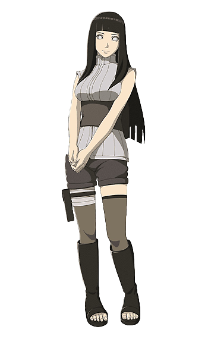
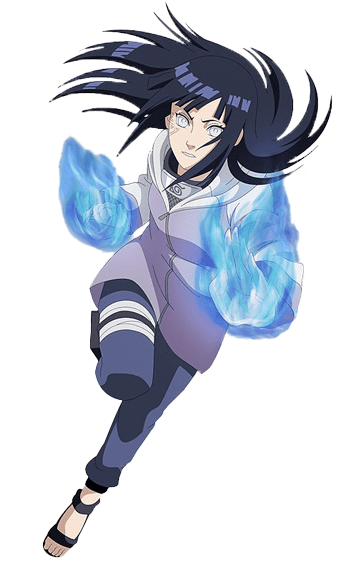

By Ahmed Elhebir © 2022
Hyuga Hinata is a kunoichi of Konohagakure. Formerly the heiress of the Hyūga clan, she lost the position upon being deemed unsuited for the responsibilities of leading the clan. Nonetheless, Hinata persevered and from her observation of Naruto Uzumaki especially, Hinata found an example to follow. Through her membership with Team 8, she sought to become strong enough to change herself, if even a little at a time. A few years after the Fourth Shinobi World War, Hinata joined the Uzumaki clan after marrying Naruto.
Hinata is the oldest daughter of Hiashi Hyūga. When she was still a child, Hinata was almost kidnapped by the-then Head Ninja of Kumogakure, who was visiting Konoha under the guise of signing a peace treaty between their two villages. Hiashi killed him and saved Hinata, setting in motion the events that would become known as the "Hyūga Affair". Because Hiashi was the head of the Hyūga clan, Hinata was raised to be its heiress and her family expected great things from her. But even at a young age, her father came to believe that Hinata was not suited for the role of heiress, as she struggled under his gruesome training regime, on top of him also believing that her timid personality prevented her from truly excelling. When Hinata's younger sister Hanabi started displaying superior talent, Hiashi began to reconsider Hinata's selection as heiress.Hinata was then disinherited and turned over to the care of Kurenai Yūhi.
Originally, Hinata's gentle personality hindered her performance, to which she was deemed too weak and unworthy for the role of heir. After committing herself getting stronger in her training for Naruto, receiving consistent praise from her team and clan for her improving skills and strengthening character, as well as being promoted to chūnin rank. Two years after the war, Hinata, having been recognized by Hamura Ōtsutsuki as the "Byakugan Princess", proves to be crucial in the destruction of the Tenseigan, even though she herself can't destroy it. Despite spending at least a decade as a housewife, she could survive an attempt to get Naruto back from Momoshiki Ōtsutsuki, and even defeat Hanabi, who is an active jōnin and continues training to become the next clan leader, in a sparring match. Hinata at the time was reluctant to fight and unprepared when Hanabi attacked seriously. Despite being rusty, she was able to keep pace and soundly win the fight making Hanabi accept the loss.
It isn't a jutsu in the traditional sense of the word, but Hinata was born with the dojutsu. It grants Hinata a wealth of abilities, beyond just the use of the Gentle Fist and Eight Trigrams attacks. It gives her near 360-degree vision, essentially allotting her eyes in the back of her head. It also helps make her an excellent tracker and gives her the ability to identify genjutsu, provided she's not caught in it.

Something that Hinata has taken a great degree of difficulty to master. At the start of the series, Neji was the go-to Hyuga, showing off most of their abilities as Hinata was often shown as inept. Thankfully, that changed as things went on, letting Hinata show off the patented Hyuga jutsu, striking their opponent with a series of strikes that eventually added up to sixty-four.

Yet another ability founded in fillers, but one that felt like a natural extension of already established Eight Trigram abilities. It would make sense for her to be able to develop more defensive-focused uses. The technique helped build a barrier between her and her foe via chakra, create what looked like a chakra fence. It showed how creative Hinata could be, lending itself to a great degree of versatility and could even be used offensively if she wanted.

The jutsu was Hinata's strongest by the end of Shippuden and is a technique only taught to the main branch members of the Hyuga clan. Spurred on by this, she managed to craft the ability after hearing about all of the training Naruto had done. It's the culmination of her expelling chakra out of her palms, allowing it to form into two large lion heads that give her attacks a greater range and destructive power than before. Upon contact, they even drain chakra from their foes.